Star Wars I: A ameaça Fantasma - Ano no Universo Star Wars: 32 Antes da batalha de Yavin.
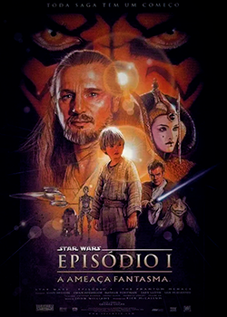Star Wars II: Ataque dos Clones - Ano no Universo Star Wars: 22 Antes da batalha de Yavin.
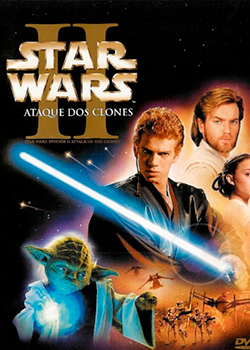Star Wars III: A vingança dos Sith - Ano no Universo Star Wars: 19 Antes da batalha de Yavin.
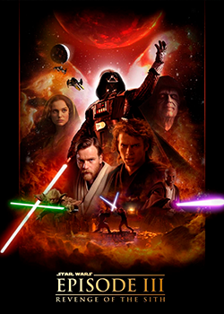The Clone Wars + Filme - Ano no Universo Star Wars: 22-18 Antes da batalha de Yavin.
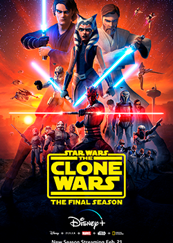Solo: A Star Wars Story - Ano no Universo Star Wars: 10 Antes da batalha de Yavin com Prólogo 3 anos antes.
Star Wars Rebels - Ano no Universo Star Wars: 5 Antes da batalha de Yavin - 1 Depois da batalha de Yavin.
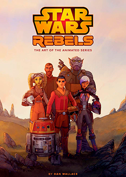Rogue One: A Star Wars Story - Ano no Universo Star Wars: Ano da batalha de Yavin com Prólogo 13 anos antes.
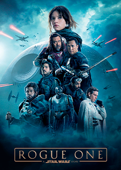Star Wars IV: Uma Nova Esperança - Ano no Universo Star Wars: Ano da batalha de Yavin.
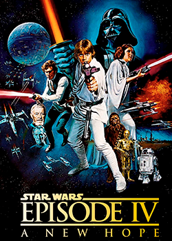Star Wars V: O Império Contra-Ataca - Ano no Universo Star Wars: 3 Anos depois da batalha de Yavin.
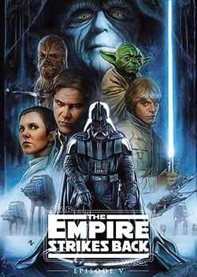Star Wars VI: O Regresso Do Jedi - Ano no Universo Star Wars: 4 Anos depois da batalha de Yavin.
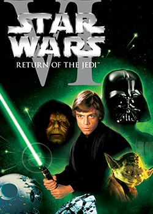The Mandalorian- Ano no Universo Star Wars: 9 Anos depois da batalha de Yavin.
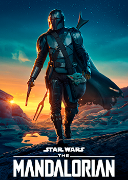Star Wars VII: O Despertar da Força - Ano no Universo Star Wars: 33 Anos depois da batalha de Yavin.
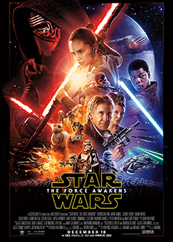Star Wars VIII: Os Últimos Jedi - Ano no Universo Star Wars: 34-35 Anos depois da batalha de Yavin.
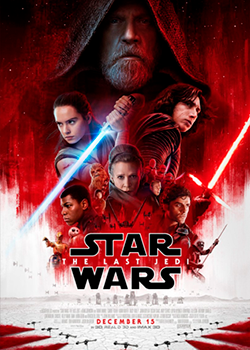Star Wars IX: A Ascensão de Skywalker - Ano no Universo Star Wars: 36 Anos depois da batalha de Yavin.